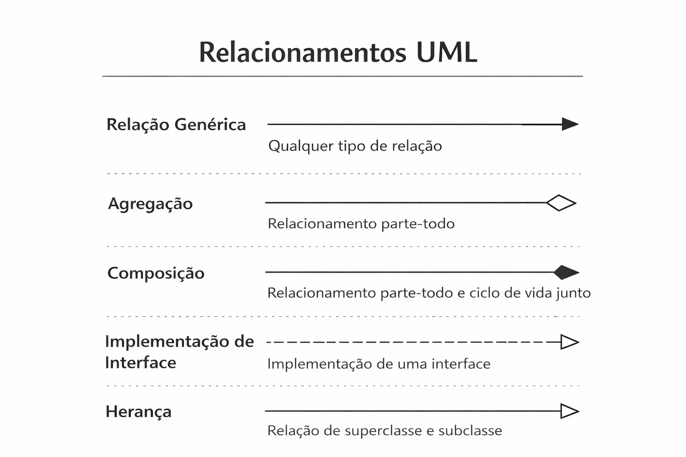
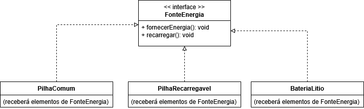

O construtor é um método especial que é chamado automaticamente quando um objeto é criado com new. Ele serve para inicializar o objeto, ou seja, definir valores iniciais para os atributos, como se fossem parâmetros.
Os métodos construtores têm características importantes:
void.
PS: Isso acima é pra linguagens estaticamente tipadas como o Java, C# e C++. Linguagens como PHP e Python têm métodos especiais para usarmos como construtores (no caso, __construct() e __init__(), respectivamente).
Com o construtor, você já cria o objeto com valores definidos, sem precisar ficar escrevendo vários setters depois da criação, independente da visibilidade dos atributos.
Veja a classe Carro com o método construtor:
public class Carro {
// Atributos privados (encapsulados)
private String cor;
private String modelo;
private int velocidade;
// Métodos públicos
public void acelerar() {
this.velocidade += 10;
}
public void frear() {
this.velocidade -= 10;
}
// Construtor com parâmetros e atribuições
public Carro(String cor, String modelo, int velocidade) {
this.cor = cor;
this.modelo = modelo;
this.velocidade = velocidade;
}
// Getters e Setters
public String getCor() {
return this.cor;
}
public void setCor(String cor) {
this.cor = cor;
}
public String getModelo() {
return this.modelo;
}
public void setModelo(String modelo) {
this.modelo = modelo;
}
public int getVelocidade() {
return this.velocidade;
}
public void setVelocidade(int velocidade) {
this.velocidade = velocidade;
}
}
E a instanciação pode ser feita assim:
// Criando o objeto com os atributos definidos, dispensando os setters nesse caso
Carro cr = new Carro("Vermelho", "Uno", 0);
// Usando os métodos
cr.acelerar();
System.out.println("Cor: " + cr.getCor());
System.out.println("Modelo: " + cr.getModelo());
System.out.println("Velocidade atual: " + cr.getVelocidade());
cr.frear();
System.out.println("Velocidade atual: " + cr.getVelocidade());
PS: Se uma classe não tiver um construtor definido, a linguagem cria automaticamente um construtor padrão, que é vazio e não faz nada. Quando criamos nosso próprio construtor, esse passa a ser o construtor usado ao criar objetos. Em linguagens como Java, C# e C++, é possível ter vários construtores na mesma classe, desde que eles tenham listas de parâmetros diferentes (conceito conhecido como polimorfismo de sobrecarga, que veremos mais pra frente). Um deles pode ser vazio se quisermos. Por exemplo:
// Sobrecarga de construtores:
// Passando velocidade:
public Carro(String cor, String modelo, int velocidade) {
this.cor = cor;
this.modelo = modelo;
this.velocidade = velocidade;
}
// Sem passar velocidade:
public Carro(String cor, String modelo) {
this.cor = cor;
this.modelo = modelo;
this.velocidade = 0;
}
// Construtor vazio:
public Carro() {
}
Aí, no caso acima, podemos passar ou não a velocidade, ou mesmo criar um objeto sem atribuir nada, a diferença de parâmetros definirá qual construtor será chamado pelo objeto. Podemos chamar construtores consecutivos assim, fazendo o encadeamento:
// Sobrecarga de construtores:
// Passando velocidade:
public Carro(String cor, String modelo, int velocidade) {
this.cor = cor;
this.modelo = modelo;
this.velocidade = velocidade;
}
// Sem passar velocidade:
public Carro(String cor, String modelo) {
this(cor, modelo, 0);
}
// Construtor vazio:
public Carro() {
this(null, null, 0);
}
E criando os objetos:
Carro cr = new Carro("Vermelho", "Uno", 0);
// Usando os métodos
cr.acelerar();
System.out.println("Cor: " + cr.getCor());
System.out.println("Modelo: " + cr.getModelo());
System.out.println("Velocidade atual: " + cr.getVelocidade());
cr.frear();
System.out.println("Velocidade atual: " + cr.getVelocidade());
Carro cr2 = new Carro("Preto", "Gol"); // Sem passar velocidade
// Usando os métodos
cr2.acelerar();
System.out.println("Cor: " + cr2.getCor());
System.out.println("Modelo: " + cr2.getModelo());
System.out.println("Velocidade atual: " + cr2.getVelocidade());
cr2.frear();
System.out.println("Velocidade atual: " + cr2.getVelocidade());
Carro cr3 = new Carro(); // Sem passar nada
// Definindo valores para os atributos:
cr3.setCor("Azul");
cr3.setModelo("Civic");
cr3.setVelocidade(0);
// Usando os métodos
cr3.acelerar();
System.out.println("Cor: " + cr3.getCor());
System.out.println("Modelo: " + cr3.getModelo());
System.out.println("Velocidade atual: " + cr3.getVelocidade());
cr3.frear();
System.out.println("Velocidade atual: " + cr3.getVelocidade());
Um destrutor é um método especial que é executado automaticamente quando um objeto está prestes a ser destruído, ou seja, quando ele sai de uso na memória. Ele serve para limpar recursos, como fechar arquivos, liberar memória, desconectar algo, etc.
Os métodos destrutores têm características importantes:
~).
void.
PS: Isso acima é basicamente para o C++. Linguagens como PHP e Python têm métodos especiais para usarmos como destrutores (no caso, __destruct() e __del__(), respectivamente).
Em linguagens como o Java, não existe destrutor porque essa linguagem usa um coletor de lixo (garbage collector), que faz a limpeza da memória automaticamente. Linguagens como PHP e Python até possuem destrutores, mas também fazem coleta automática, como a maioria das linguagens modernas. O destrutor é mais necessário em linguagens como C++, onde o programador precisa liberar recursos manualmente.
Veja um exemplo de destrutor em C++, numa classe baseada no mesmo Carro acima:
Carro::~Carro() {
cout << "Carro Destruído: " << this->modelo << endl;
}
E aí para destruir o objeto, basta chamar no código principal delete seguido do nome dele, no caso, delete carro;. Faça isso no final do código principal.
Atributos e métodos estáticos (static) pertencem à classe, não aos objetos. Isso significa que:
Eles são usados quando algo deve ser comum a todos os objetos ou quando não faz sentido depender de uma instância para funcionar.
Veja um exemplo simples de classe totalmente com métodos e atributos estáticos:
public class UtilMath {
// Constante estática (valor que não muda)
public static final double PI = 3.14159265359;
// Método estático para calcular área de um quadrado
public static double areaQuadrado(double lado) {
return lado * lado;
}
// Método estático para calcular área de um círculo
public static double areaCirculo(double raio) {
return PI * raio * raio;
}
}
No código principal:
// Chamando métodos estáticos diretamente pela classe
double areaQ = UtilMath.areaQuadrado(5);
double areaC = UtilMath.areaCirculo(3);
System.out.println("Área do quadrado: " + areaQ);
System.out.println("Área do círculo: " + areaC);
// Acessando constante estática
System.out.println("Valor de PI: " + UtilMath.PI);
Entenda também que:
static final) são valores que não mudam e pertencem à classe. Algumas linguagens usam no lugar coisas como const. Um atributo pode ter só static e nesse caso ele pode ser alterado, mas continua estático (ou seja, pertencendo à classe).this, pois estes pertencem à classe e o this só se usa em objetos. Normalmente para acessar atributos e métodos estáticos dentro da classe usamos o nome da mesma diretamente (exceto o PHP que usa
self).Até agora, vimos os diagramas, mas como futuramente vamos ter que trabalhar com interfaces, heranças e agregações, veja as setinhas de relacionamento UML para todos esses casos:
No caso, a seta fica apontada para a interface ou para a classe mãe. Já o losango fica no lado da classe que agrega a outra (o todo), basicamente o contrário das setas. Em outras palavras, quem implementa ou herda aponta para quem é mais genérico, já quem tem o losango é o todo.
Uma interface é como um contrato que diz quais métodos uma classe deve ter, mas sem dizer como eles funcionam. Ela não tem código dentro dos métodos, apenas a assinatura deles, sem bloco. Em resumo:
Interfaces garantem que diferentes classes tenham comportamentos em comum, mesmo sendo totalmente diferentes entre si.
Lembrando que algumas linguagens POO não usam interfaces, como o Python e o C++, podemos simular uma com uma classe puramente abstrata/virtual pura, no entanto, isso não significa que elas são exatamente equivalentes.
Lembrando que, assim como aconteciam com as classes, as interfaces devem ter a primeira maiúscula e as restantes minúsculas, com CamelCase permitido (como FonteEnergia, que exemplificaremos logo em seguida).
Para uma classe implementar uma interface, usamos no Java a palavra implements. A classe que implementar essa interface é obrigada a criar os mesmos métodos.
Veja um exemplo de interface:
public interface FonteEnergia {
public void fornecerEnergia();
public void recarregar();
}
PS: Os métodos nem sempre precisam ser void, pode ser qualquer tipo (como int, char ou boolean), inclusive outras classes/interfaces. Também podem ter parâmetros normalmente. Como citado, ao exibir valores, prefira os retornar ao invés de usar métodos padrões de exibição (como o System.out.println do Java), usaremos aqui apenas por questões didáticas.
E implementando essa interface, podemos ter várias classes cada uma implementando da sua forma:
Classe 1:
public class PilhaComum implements FonteEnergia {
@Override
public void fornecerEnergia() {
System.out.println("Pilha comum: Fornecendo energia por um curto período.");
}
@Override
public void recarregar() {
System.out.println("Pilha comum não pode ser recarregada!");
}
}
Classe 2:
public class PilhaRecarregavel implements FonteEnergia {
@Override
public void fornecerEnergia() {
System.out.println("Pilha recarregável: Fornecendo energia de forma estável.");
}
@Override
public void recarregar() {
System.out.println("Pilha recarregável recebendo carga!");
}
}
Classe 3:
public class BateriaLitio implements FonteEnergia {
@Override
public void fornecerEnergia() {
System.out.println("Bateria de lítio: Fornecendo energia de alta performance.");
}
@Override
public void recarregar() {
System.out.println("Bateria de lítio recebendo carga!");
}
}
PS: Note que o Java adiciona a notação @Override em métodos sobreescritos. Isso também é visto com métodos abstratos de classes abstratas (virtuais puras) e virtuais, que veremos mais pra frente. As interfaces também são parte da abstração. No PHP a notação override
não existe, já no C# e C++ eles são usados em métodos abstratos e virtuais, de forma ligeiramente diferente, C# não utiliza essa anotação em métodos implementados de interfaces.
Veja o diagrama dessa interface e dessas classes:
E aí, no código principal:
// Definindo três objetos do "tipo" da interface e a instância com as classes implementadoras da mesma.
FonteEnergia p1 = new PilhaComum();
FonteEnergia p2 = new PilhaRecarregavel();
FonteEnergia p3 = new BateriaLitio();
p1.fornecerEnergia(); // Métodos definidos na interface, sendo executado somente o que está em cada classe implementadora equivalente.
p2.fornecerEnergia();
p3.fornecerEnergia();
p1.recarregar(); // Idem.
p2.recarregar();
p3.recarregar();
Em resumo, a interface FonteEnergia diz apenas que algo deve fornecer energia, cada tipo de pilha/bateria fornece energia do seu jeito. Podemos trocar os objetos livremente e todos funcionam da mesma forma (fazendo parte também do polimorfismo, no caso, o polimorfismo de inclusão).
Ao usar uma interface, só poderemos usar os métodos descritos nela, mesmo se a classe implementadora tiver outros métodos, eles não estarão acessíveis por não estarem na interface, o que garante também o encapsulamento.
PS: Uma classe pode implementar mais de uma interface, nesse caso, separe elas por vírgulas, com algo como public class NomeClasse implements NomeInterface1, NomeInterface2, mas nesse caso deveremos iniciar o objeto com o nome da classe implementadora ao invés de uma das interfaces.